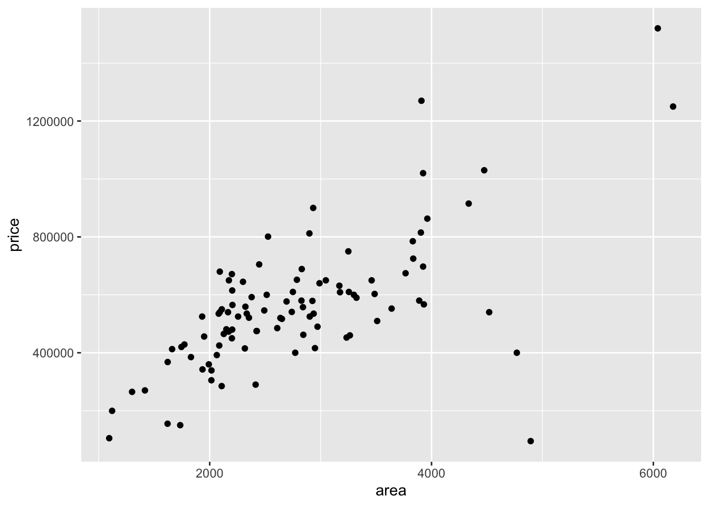
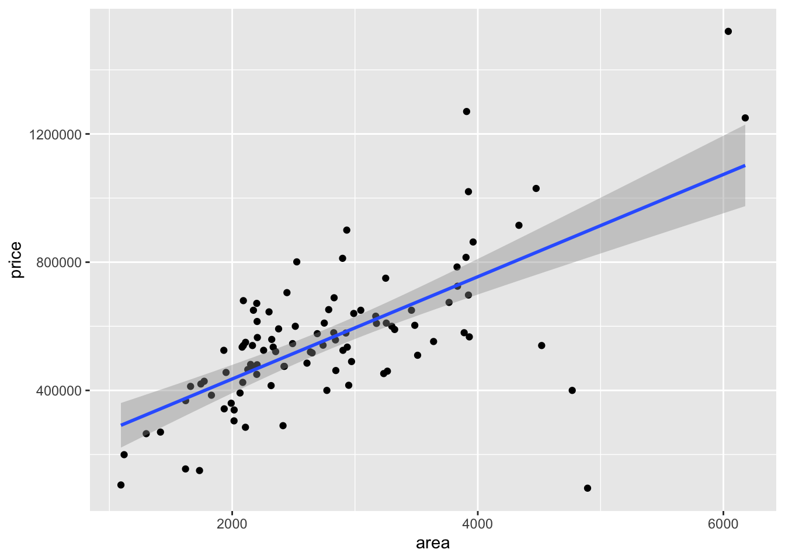
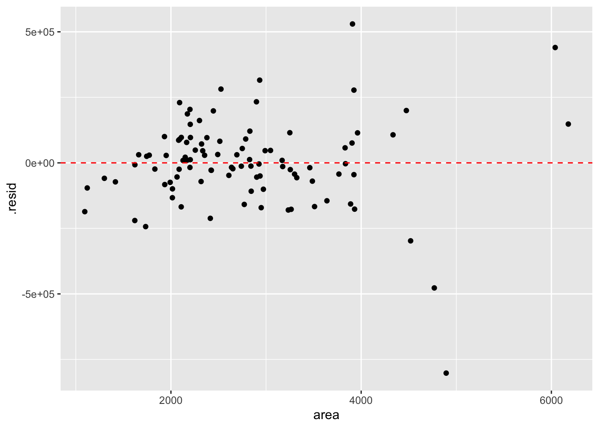
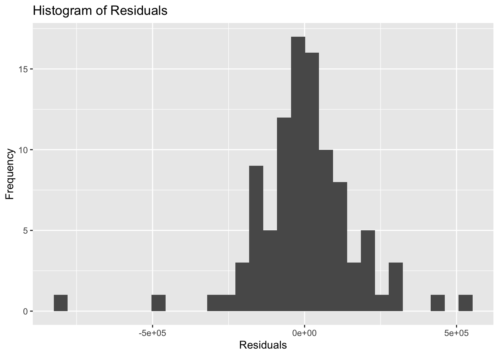

Code
data(duke_forest)In this lab, we will explore the concept of simple linear regression, a fundamental statistical technique used to model the relationship between a predictor (aka independent) and a response (dependent) variable. We call this simple linear regression because it involves only one predictor variable and one response variable. The term linear suggests that we will consider relationships that show a linear pattern. Statistical techniques for modelling non-linear relationships and/or that use multiple variables (predictor and even response) do exist but are beyond the scope of this course. Linear regression is widely used in various fields, including economics, biology, engineering, and social sciences, to make predictions and understand relationships between variables.
Go to posit cloud (https://posit.cloud) and open the MATH 144 project. Once your MATH 144 project is open, clean up the console and the environment area. You may also want to close all open files.
Next, create your new quarto file as follows:
File > New File > Quarto document. Use the file name Lab_4. Do not delete the .qmd extension.
Add the author and title keys to the YAML section. Write your name (in quotes) in the author field (author: "Student Name") and set the title to “Simple Linear Regression".
Change the output option to pdf then click on render. A PDF document with your name and document title should pop up.
You will need openintro, tidyverse, and broom packages for this lab. We have not installed the broom package before, so you will need to do that first. To do this, you can run the code install.packages("broom") in the console. After installing the broom package, create a level 2 header and call it Packages. Under this, insert a new code chunk and load the three packages using the library() function as follows:
library(openintro)
library(tidyverse)
library(broom)Be sure to run this chunk to make sure the packages were successfully loaded. For a cleaner looking document, use include = FALSE in the code chunk to prevent the output of this chunk.
You may use the following alternative way of deactivating the chunk output. If you use this, delete the first package code chunk.
#| include: false
library(openintro)
library(tidyverse)
library(broom)We will continue using the duke_forest data set contained in the openintro package. Insert a new code chunk and load the data using the code below:
data(duke_forest)This data were used in previous labs, but you can refresh your memory by running the query ?duke_forest. It is very important that you examine this data set first if you don’t remember it well.
We are interested in the variables price (given in US dollars) and area of the home (in square feet). Specifically, we want to explore the relationship between the two variables and create linear regression model with area as the predictor variable and price as the response variable.
Below is a scatter plot showing the relationship between price and area:
ggplot(data = duke_forest) +
aes(x = area, y = price) +
geom_point()
Question: Describe the relationship between price and area based on the scatter plot. Be sure to talk about the direction, strength, and form of the relationship. Are there any unusual observations? What might be a reasonable explanation for these unusual observations?
Model Answer: The relationship between price and area appears to be positive — large homes are generally more expensive and vice versa. The overall relationship appears to be linear and moderately strong, suggesting that a linear regression model may be appropriate for this data. There seems to be a few unusual observations (lower right), particularly homes with very low prices relative to their area. These outliers could be due to factors such as location, amenities, or unique features of the homes that are not captured by the scatter plot.
To quantify the strength and direction of the linear relationship between price and area, we use a statistic known as the correlation coefficient (abbreviated as \(r\)$r$. We calculate this in R using the cor() function as shown below:
duke_forest |>
summarize(cor(price, area))# A tibble: 1 × 1
`cor(price, area)`
<dbl>
1 0.667Note: The correlation value of 0.67 confirms our earlier assessment of the relationship from the scatter plot.
If you want to see the least squares regression line, you simply add the geom_smooth() function to the scatter plot created earlier. You will also use the argument method and set it to "lm" as shown below:
ggplot(data=duke_forest, aes(x=area, y=price))+
geom_point()+
geom_smooth(method="lm") # this adds the line`geom_smooth()` using formula = 'y ~ x'
To find the equation of the line, we can use the lm() function as shown below. The first argument takes the form y ~ x, where y is the response variable and x is the predictor variable.
lm(price~area, data=duke_forest)
Call:
lm(formula = price ~ area, data = duke_forest)
Coefficients:
(Intercept) area
116652.3 159.5 It is helpful to save the model as an object so that when you need it, you don’t write new code. The code below saves the model as model and also prints the model right under:
Call:
lm(formula = price ~ area, data = duke_forest)
Coefficients:
(Intercept) area
116652.3 159.5 We can write the equation of the model for predicting price as follows:
\[\widehat{price} = 159.5\times (area) + 116,652.3\]
Interpretation of slope and intercept
We can use our model to make predictions. For example, if we wanted to predict the sale price of a 2,000 square feet home, we can use the equation as follows:
\[\widehat{price} = 116,652.3+159.5\times 2000 = \$436,652.3\]
Our model predicts that a home with 2,000 square feet in the same area where the data were collected would sell for approximately $436,652.3.
The augment() function can be used to calculate the predictions (estimated home price) for each home in the data for which the area is available. The head function is used to view the first few rows of the new object.
predictions <- augment(model)
head(predictions)# A tibble: 6 × 8
price area .fitted .resid .hat .sigma .cooksd .std.resid
<dbl> <dbl> <dbl> <dbl> <dbl> <dbl> <dbl> <dbl>
1 1520000 6040 1079931. 440069. 0.133 162605. 0.604 2.80
2 1030000 4475 830340. 199660. 0.0435 168386. 0.0333 1.21
3 420000 1745 394951. 25049. 0.0226 169664. 0.000260 0.150
4 680000 2091 450132. 229868. 0.0157 168011. 0.0150 1.37
5 428500 1772 399257. 29243. 0.0220 169657. 0.000345 0.175
6 456000 1950 427645. 28355. 0.0182 169659. 0.000266 0.170We are concerned with .fitted and .resid columns only. The .fitted column show the prices calculated based on the model (the predictions) while the .resid column shows the difference between actual and predicted prices. Residuals are used in model evaluation. A small residual indicates that the model’s prediction is close to the actual value, while a large residual indicates a poor prediction.
To visualize the residuals, we can create a residual plot. A residual plot displays the residuals on the y-axis and the predictor variable (in this case, area) on the x-axis. Ideally, we want to see a random scatter of points around the horizontal line at 0, which indicates that our model is appropriate for the data. If we see patterns in the residuals, it may suggest that our model is not capturing all the information in the data.
ggplot(data=predictions, aes(x=area, y=.resid))+
geom_point()+
geom_hline(yintercept=0, linetype="dashed", color="red")
We can also create a histogram of the residuals to check if they are approximately normally distributed. This is another assumption of linear regression.
ggplot(data=predictions, aes(x=.resid))+
geom_histogram()+
labs(title="Histogram of Residuals", x="Residuals", y="Frequency")`stat_bin()` using `bins = 30`. Pick better value `binwidth`.
A histogram that is roughly bell-shaped suggests that the residuals are approximately normally distributed, which is a good sign for our linear regression model. If the histogram shows a skewed distribution or has multiple peaks, it may indicate that our model is not appropriate for the data.
In summary, certain assumptions/conditions need to be checked when performing linear regression. These include:
Have a section here illustrating how analyses are reported in the literature. Can use the APA format because that is what the projects require.
In this lab, we explored the concept of simple linear regression using the duke_forest data set. We created a scatter plot to visualize the relationship between price and area, calculated the correlation coefficient to quantify the strength and direction of the relationship, fitted a linear regression model, visualized the model, and evaluated its performance using residuals. Linear regression is a powerful tool for understanding relationships between variables and making predictions based on those relationships.
Create a new header called Lab 4 Exercises and answer the questions below. When you are done, render the document to generate a PDF. Download the document and submit it on Canvas under Lab 4. The lab will be graded out of 20 (Ten points for exploration work above, and 10 for the exercises).
(1 pt) The data set cars04 is in the openintro package. Load the data set into your work space. What are the cases in this data set and how many are they? What do the variables weight and eng_size represent, and what are the units for these variables?
(2 pts) Create a scatter plot to visualize the relationship between eng_size (x-axis) and weight (y-axis). Describe the relationship between the two variables, making sure to talk about the direction, strength, and form of the relationship. State if there are any unusual observations and provide a reasonable explanation for the unusual observations.
(1 pt) Calculate the correlation coefficient between eng_size and weight. Comment on this statistic.
(3 pts) Generate a linear regression model for predicting weight based on eng_size (predictor). Write the equation of the model and interpret the slope and intercept in the context of the data. Be sure to state the units of the slope and intercept.
(1 pt) Use your model from #4 above to estimate the weight of a car with an engine size of 3.4 liters. Explain/show work.
(2 pts) What’s the residual for the first case in the data set? For this case, does the model overestimate or underestimate the weight of the car? Explain how you know this.